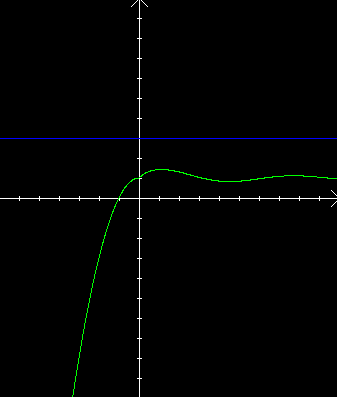
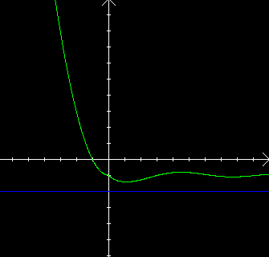
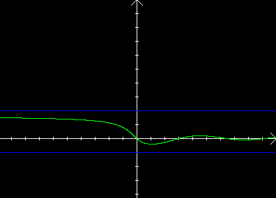

| Choisissez votre langue ! | Choose your language ! |
Fonctions majorées
Upper bounded functions
définition 1
On dit qu'une fonction numérique (f,D) est
'majorée sur D'
sur l'ensemble f(D) est , autrement dit s'il existe un réel M tel que f(x) ≤ M ∀x∈D.
definition 1
We say that a numerical function (f,D) is
'upper bounded on D'
if the set f(D) has a , in other words if there exists a real M such that f(x) ≤ M ∀x∈D.
Illustration :
Illustration :

Il résulte de cette définition que :
It follows from this definition that :
propriété 1
Si f est majorée sur D, alors l'ensemble f(D) possède une .
property 1
If f is upper-bounded on D, then the set f(D) possesses a .
C'est une conséquence de .
Fonctions minorées
It is a consequence of .
Lower-bounded functions
définition 2
On dit qu'une fonction numérique (f,D) est
'minorée sur D'
si l'ensemble f(D) est , autrement dit s'il existe un réel m tel que f(x) ≥ m ∀x∈D.
definition 2
We say that a bumeric function (f,D) is
'lower-bounded on D'
if the set f(D) has a , in other words if it exists a real number m such that f(x) ≥ m ∀x∈D.
Illustration :
Illustration :

Il résulte de cette définition que :
It results from this definition that :
propriété 2
Si f est minorée sur D, alors l'ensemble f(D) possède une .
property 2
If f is lower-bounded on D, then the set f(D) has an .
Fonctions bornées
Bounded functions
définition 3
On dit que f est
'bornée'
sur D si f est à la fois majorée et minorée sur D.
definition 3
We say that f is
'bounded'
on D, if it is both upper-bounded and lower-bounded on D.
Illustration :
Illustration :

propriété 3
Toute fonction bornée sur son domaine possède une borne supérieure et une borne inférieure sur ce domaine.
property 3
Any function bounded on a domain possesses both a supremum and an infimum on this domain.
Bornes et opérations algébriques
Comme dans le cas des fonctions monotones on peut essayer de voir comment connecter les majorations, minorations avec les opérations algébriques.Concernant les sommes voir .
Concernant les produits et quotients voir .
Bornes et composition
Concernant les minorations et majorations de fonctions composées voir .Bounds and algebraic operations
As in the case of monotonic functions we can try to see how to connect the bounds with the operations.Regarding sums see .
For products and quotients see .
Bounds and composition
Concerning the bounds of compound functions see .|
Création Gilles Dubois - licence CC-BY-SA
Created by Gilles Dubois - licence CC-BY-SA
|
Septembre 2023
September 2023
|
Version mobile Jquery
Mobile Jquery version
|
|